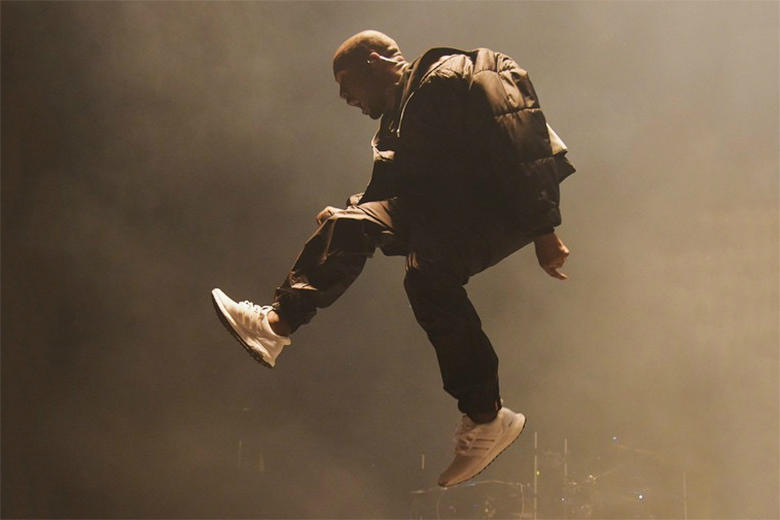
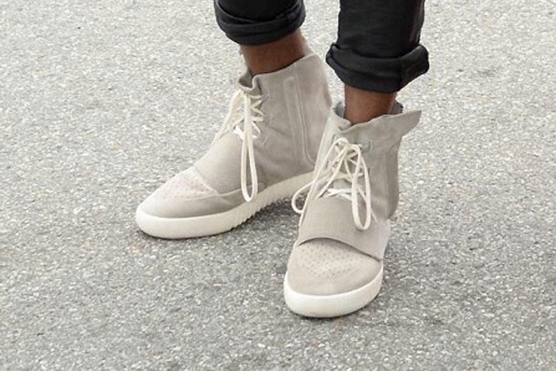
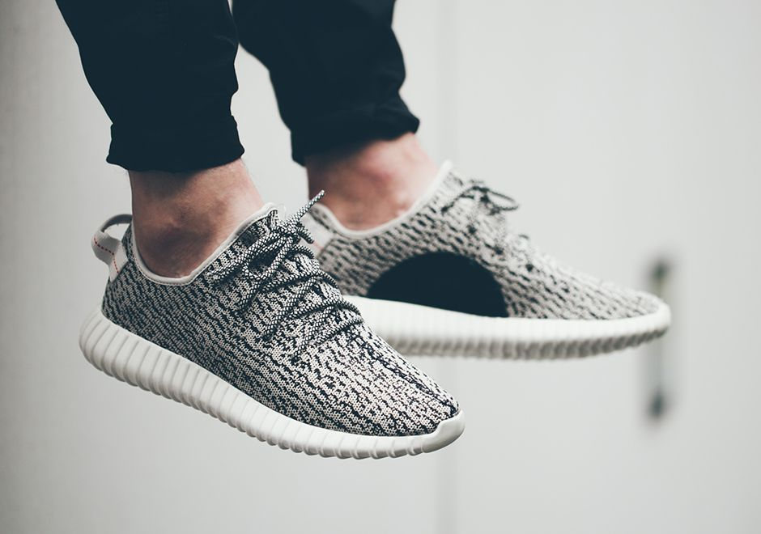

Adidas was trying to combat Nike's sales by introducing a new comfort technology called boost. This was the answer Adidas needed to go against Nike's infamous Air technology. As Kanye's relationship with Nike started to plummet, Adidas was knocking at Kanye's door and through him Adidas was able to revamp their entire brand.
Adidas boost was the softest technology to be introduced to the sneaker world, since Nike's Air Max technology. Many consumers claimed it to be the softest cushioning system on their feet. People who first tried out boost were saying that it was like walking on clouds.
Kanye West was unhappy with Nike because Nike was not giving him royalties on his Nike Yeezy releases. The reason he wanted those royalties were because many of his sneakers would sold out in a matter of seconds and whatever Kanye would wear, it would sell in large quantities. So as a result, he believed he deserved some money for his name being a massive selling point. Once he switched to Adidas, he was granted royalties to all Adidas collaborations with him and was given a verbal promise by Adidas, that all his fans would be able to own a pair of his shoes.
Kanye West was shown in an image of him wearing a pair of the Adidas Ultra Boost in a concert that he was performing in. Once the image surfaced, the shoe was immediately sold out in all colors and sizes.
Kanye West original Adidas debut sneaker was the Grey Yeezy 750. The sneaker is composed of premium suede, a side zipper to fully lock in your foot in place, a suede strap to help lockdown your foot, and Adidas boost to provide added comfort.
Kanye West second sneaker release of his Adidas collection was the Yeezy 350 Turtle Dove. The sneaker is composed of a primeknit material to add more breathability to your feet, Adidas boost material to provide added support to your heel and midfoot.
